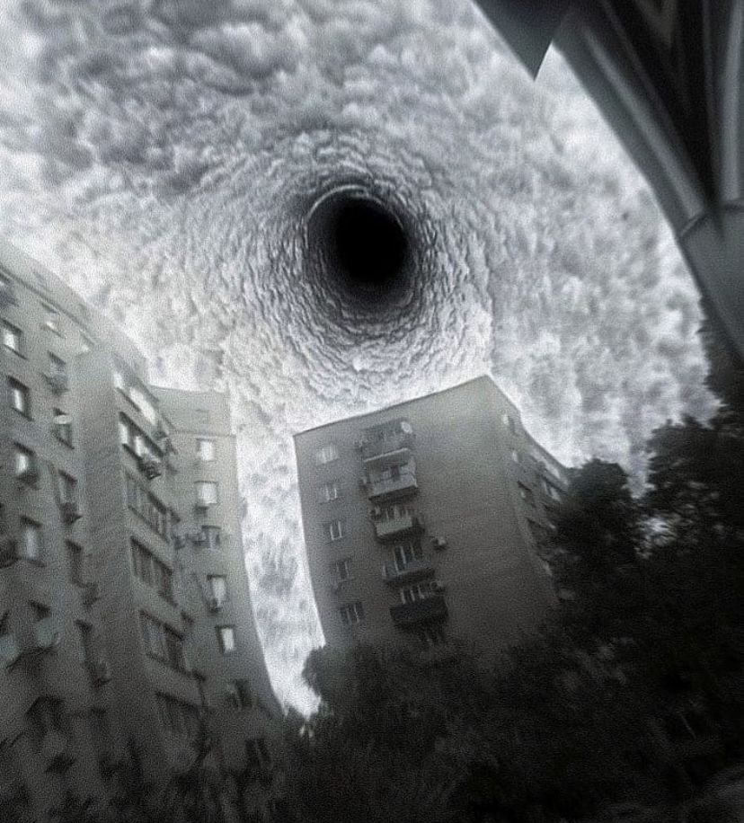

Construindo o futuro da medicina desde 1974
Início | Sobre | Pesquisa Médica | Contato

A IRIS Corporation conduz pesquisas médicas avançadas em diversas áreas fundamentais, com foco no desenvolvimento de tecnologias que visam a preservação da vida, a integração homem–máquina e a compreensão de fenômenos biológicos ainda não explicados.
Nossos laboratórios são equipados com ferramentas de ponta para garantir precisão, segurança e observação constante.
Estudamos o cérebro humano para compreender padrões de memória, percepção e comportamento. ELE ESTÁ ESCUTANDO
Desenvolvemos protocolos experimentais de regeneração celular e extensão de vida.
Projetos que exploram a relação entre tempo biológico e tempo objetivo, mapeando variações e instabilidades. OLHO ABERTO
Desde nossa fundação, milhares de vidas foram impactadas positivamente pelos avanços obtidos. Cada novo dado nos aproxima de um futuro mais saudável, mais conectado e mais previsível.
Entre os destaques mais recentes estão os testes clínicos com sincronização neural direta e as primeiras demonstrações de regeneração funcional completa.
